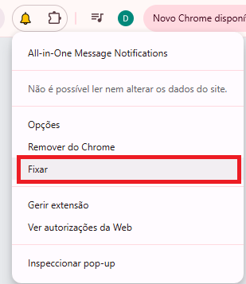
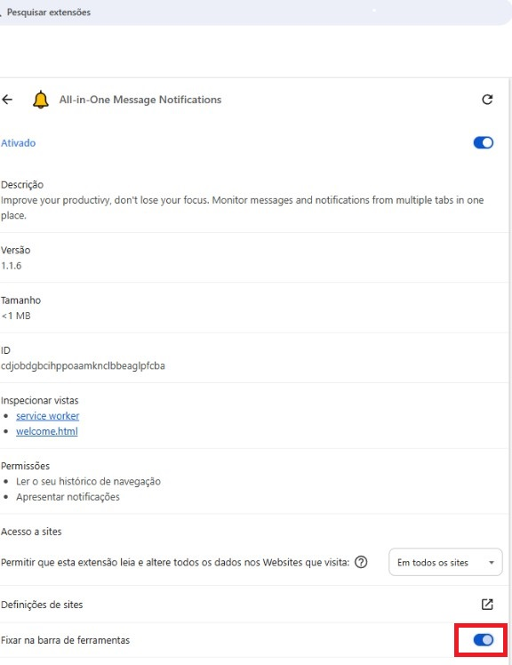
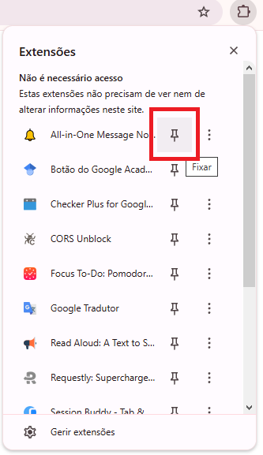
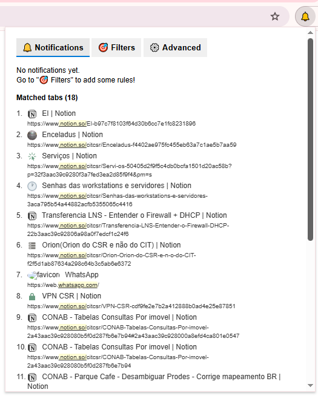
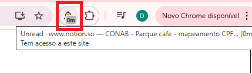

The toolbar badge appears only when a background tab updates and matches your filters.
Three ways to keep the icon on the toolbar. Pick 1, 2, or 3 below (swipe on the image row or use the arrows).
Step 1: Open the extension.
Right-click the extension icon (bell) in the toolbar, then choose Fixar / Pin. (PT: Fixar na barra de ferramentas.)

Step 1: Open this extension in Chrome.
Turn on Pin to toolbar. The switch should be blue/on. (PT: Fixar na barra de ferramentas.)

Click the puzzle piece (⊞ extensions).
Find All-in-One Message Notifications.
Click the pin icon on the row. Tooltip: Fixar.

Photos below match each step. Swipe or use ‹ ›.

